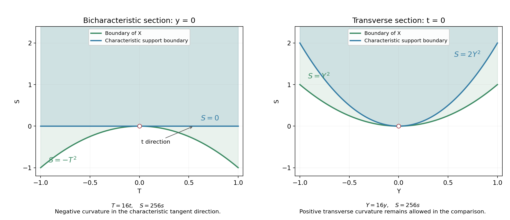

Characteristic supporting surfaces and boundary curvature
Written by GPT-6.1 Sol (OpenAI), October 2026. Self-checked by the writing AI. Public domain (CC0).
At a characteristic boundary point, the principal symbol singles out a tangent direction. Support convexity forces the boundary to curve toward the domain, or remain flat, in that direction. Curvature in other tangent directions can have either sign.
We construct an analytic characteristic surface with the prescribed contact, solve a mixed analytic Cauchy problem beside it, and extend the solution by zero on one side. Translations of this local solution produce compact distributions whose images remain in one fixed interior compact set while their supports approach the boundary.
Basic references are Boundary distance and propagation, its distance criterion (3); Primitive factors and moving polynomial roots, Theorem 3.1, for holomorphic implicit functions; and Power series and analytic lifting in Banach spaces, Theorem 1.1, for Cauchy bounds and holomorphic limits. Smooth cutoffs are supplied by Boundary flux and weak identities, Section 1. The curvature result is due to Bernard Malgrange. The mixed analytic existence argument is a quantitative Goursat argument of the kind developed by Lars Hörmander; its complete proof, with the constants used here, is included below.
Throughout \(D=-i\partial\). The lower-order coefficients of the constant-coefficient scalar operator may be complex.
1. The directional curvature condition
Let \(P\) have order \(m\ge1\) and real homogeneous principal part \(p\). Near a boundary point choose orthonormal affine coordinates \(x=(z,s)\) with
\[ X=\{s>g(z)\},\qquad g(0)=0,\qquad dg(0)=0,\qquad g\in C^2. \tag{1.1} \]The inward unit normal at the origin is \(\nu=e_s\). Suppose
\[ p(\nu)=0,\qquad b=\nabla p(\nu)\ne0. \tag{1.2} \]Euler's homogeneous identity gives \(\nu\cdot b=mp(\nu)=0\), so \(b\) is tangent to the boundary. We use the Euclidean identification of covectors and vectors in defining this direction.
Theorem 1.1 (Malgrange's curvature necessity). If \(X\) is \(P\)-convex for supports, then
\[ d^2g(0)[b,b]\ge0. \tag{1.3} \]In particular the assertion holds at every characteristic boundary point of an operator of real principal type, in every dimension \(n\ge2\). Only simplicity at the particular normal in (1.2) is needed.
The sign is fixed by the epigraph convention (1.1). The theorem does not require the full tangent Hessian to be negative or positive definite. We prove it by contradiction in Section 5.
2. A small analytic mixed problem
Write \(Q_1=\{z\in\mathbb C^N:|z_j|<1\}\). For a multi-index \(\beta\) with \(|\beta|=m\ge1\), let \(I_\beta\) be repeated integration from zero in each coordinate. Thus
\[ \partial^\beta I_\beta f=f,\qquad \left.\partial_j^k I_\beta f\right|_{z_j=0}=0 \quad(0\le k<\beta_j). \tag{2.1} \]There is no boundary condition for \(\beta_j=0\). These formulas follow by differentiating the repeated one-variable integral. Its norm on \(Q_1\), for bounded \(f\), is at most \(\|f\|_\infty/\beta!\).
We first record the two one-variable bounds used in the iteration. If \(v\) is holomorphic on the unit disc and
\[ |v(z)|\le C(1-|z|)^{-a},\qquad a\ge0, \tag{2.2} \]then
\[ |v'(z)|\le e(a+1)C(1-|z|)^{-a-1}. \tag{2.3} \]For \(a>0\), apply the Cauchy derivative estimate on a circle of radius \((1-|z|)/(a+1)\). The bound is \((a+1)(1+1/a)^a C(1-|z|)^{-a-1}\), which is at most (2.3). For \(a=0\), let the circle radius increase to \(1-|z|\); the sharper constant one suffices.
If \(a\ge1\) and \(V(0)=0\), \(V'=v\), then
\[ |V(z)|\le {C\over a}(1-|z|)^{-a}. \tag{2.4} \]Integrate along the radial segment. For \(a>1\), multiply the integral \(\int_0^r(1-t)^{-a}\,dt\) by \((1-r)^a\). With \(y=1-r\), the result is \((y-y^a)/(a-1)\). Its maximum is \(a^{-1}a^{-1/(a-1)}\le1/a\). For \(a=1\), the corresponding maximum of \(-y\log y\) is \(1/e\le1\). This proves (2.4), also when the other coordinates are held as parameters.
Lemma 2.1 (analytic Goursat contraction). Let the functions \(a_\alpha,f\), \(|\alpha|\le m\), be bounded and holomorphic on \(Q_1\). Put
\[ \sigma=\sum_{|\alpha|\le m}\sup_{Q_1}|a_\alpha|,\qquad q=2^{Nm}e^m\sigma . \tag{2.5} \]If \(q<1\), the equation
\[ \partial^\beta w=\sum_{|\alpha|\le m}a_\alpha\partial^\alpha w+f \tag{2.6} \]has a holomorphic solution on \(Q_{1/2}\) with all the zero traces in (2.1). Its germ is unique among holomorphic solutions with these traces. It satisfies
\[ \sup_{Q_{1/2}}|w| \le{\|f\|_{\infty,Q_1}\over\beta!(1-q)}. \tag{2.7} \]Proof. Set \(A=\sum a_\alpha\partial^\alpha\), \(w_0=I_\beta f\), and \(w_{j+1}=I_\beta A w_j\). We claim
\[ |w_j(z)|\le M(e^m\sigma)^j \prod_{\ell=1}^N(1-|z_\ell|)^{-mj}, \qquad M=\|f\|_\infty/\beta!. \tag{2.8} \]The case \(j=0\) is the integration bound. Suppose it holds at \(j\), and put \(a=m(j+1)\). Apply (2.3) once for each derivative in \(\alpha\). The derivative constants are bounded by \(e^m a^m\), since \(|\alpha|\le m\). The exponent in any coordinate increases by at most \(m\); increase every coordinate exponent to \(a\). It follows that
\[ |A w_j(z)|\le \sigma e^m a^m M(e^m\sigma)^j \prod_{\ell=1}^N(1-|z_\ell|)^{-a}. \tag{2.9} \]Integrate \(\beta_\ell\) times in coordinate \(\ell\). At each of the \(m\) integrations, (2.4) keeps the exponent \(a\) and divides the constant by \(a\). The factor \(a^m\) cancels. This proves (2.8) at \(j+1\).
On \(Q_{1/2}\), (2.8) is bounded by \(M q^j\). Thus \(w=\sum_{j\ge0}w_j\) converges uniformly there. Local Cauchy estimates give convergence of every fixed derivative on smaller polydiscs. Summing the iteration proves (2.6), all the zero traces, and (2.7).
For uniqueness of germs, the difference \(v\) of two solutions satisfies \(v=I_\beta A v\) on a sufficiently small polydisc. The equality follows by repeated integration and the zero traces. Rescale that polydisc to \(Q_1\), choosing its closed smaller radius inside the domain of \(v\). Each coefficient is multiplied by \(R^{m-|\alpha|}\), so its summed bound does not increase when \(R\le1\). Beginning with the bounded function \(v\), the same estimate applied to \((I_\beta A)^jv\) gives \(|v|\le\|v\|_\infty q^j\) on the half-polydisc. Let \(j\to\infty\). The germ is zero. \(\square\)
The constant in (2.5) is deliberately generous. The construction below can make the coefficient bound arbitrarily small, so no sharp constant is needed.
3. Constructing the characteristic supporting surface
Rotate the tangent coordinates so that \(z=(t,y)\), \(y\in\mathbb R^{n-2}\), and \(b=|b|e_t\). In the dual coordinates \((\tau,\eta,\varsigma)\),
\[ p(0,0,1)=0,\qquad p_\tau(0,0,1)=|b|,\qquad p_\eta(0,0,1)=p_\varsigma(0,0,1)=0. \tag{3.1} \]The last equality is Euler's identity. Fix any \(C>0\).
Lemma 3.1 (a characteristic graph). There is a real analytic \(h(t,y)\), near zero, such that
\[ \begin{gathered} h(0,y)=C|y|^2,\qquad h(0)=0,\qquad dh(0)=0,\\ p(-h_t,-h_y,1)=0,\qquad h_{tt}(0)=0,\quad h_{ty}(0)=0,\quad h_{yy}(0)=2C I. \end{gathered} \tag{3.2} \]Every level of \(\phi(t,y,s)=s-h(t,y)\) is characteristic.
Proof. The holomorphic implicit-function theorem in the polynomial-root chapter, Theorem 3.1, gives a scalar holomorphic \(a(\eta)\) near zero with
\[ a(0)=0,\qquad p(a(\eta),\eta,1)=0. \tag{3.3} \]Its derivative at zero is zero by (3.1). Since \(p\) is real, uniqueness makes this branch real on real arguments. Put
\[ \begin{split} x_0(y)&=(0,y,C|y|^2),\\ \xi_0(y)&=(a(-2Cy),-2Cy,1),\\ x(\lambda,y)&=x_0(y)+\lambda\nabla p(\xi_0(y)). \end{split} \tag{3.4} \]In the holomorphic construction, \(|y|^2\) denotes the polynomial \(\sum y_j^2\); on real arguments it is the indicated Euclidean square.
The projection of \(x(\lambda,y)\) onto its \((t,y)\) coordinates has invertible derivative at zero: its first column is \((|b|,0)\), and its remaining columns are \((0,I)\). Apply the same implicit-function theorem to invert this projection locally. Its last coordinate is the required real analytic graph \(s=h(t,y)\).
We check its normal, including the dependence of the covector on \(y\). The covector \(\xi_0\) annihilates \(dx_0\). Euler's identity gives \(\xi_0\cdot\nabla p(\xi_0)=0\), and differentiating \(p(\xi_0)=0\) gives \(\nabla p(\xi_0)\cdot d\xi_0=0\). Differentiating Euler's identity once more therefore yields
\[ \xi_0\cdot d\bigl(\nabla p(\xi_0)\bigr)=0. \tag{3.5} \]Indeed the left side equals \((m-1)\nabla p(\xi_0)\cdot d\xi_0\), by homogeneity. Thus \(\xi_0\) annihilates both \(x_\lambda\) and every \(x_{y_j}\). Its last component is one, so it is exactly the graph normal \((-h_t,-h_y,1)\). This proves the characteristic identity in (3.2).
At \(t=0\), the inverse projection has \(\lambda=0\), since \(p_\tau\) remains nonzero nearby. Hence \(h(0,y)=C|y|^2\). The graph is tangent to \(s=0\) at zero. Differentiate its characteristic identity at zero in each tangent coordinate. Equation (3.1) gives \(-|b|h_{t t}(0)=0\) and \(-|b|h_{t y_j}(0)=0\). The remaining Hessian is the initial Hessian \(2CI\). Finally \(\phi=s-h\) has the same gradient at every value of \(s\), proving the assertion for all its levels. \(\square\)
For \(n=2\) the vector \(y\) is empty. The construction gives the flat characteristic line; every formula above has its usual empty-matrix interpretation.
4. An exact one-sided null solution
Theorem 4.1. For the graph in Lemma 3.1 there is a distribution \(u\), defined near zero, with
\[ P(D)u=0,\qquad u(t,y,s)=\bigl(s-h(t,y)\bigr)_+^{\,m-1}a(t,y,s-h(t,y)), \qquad a(0)=1, \tag{4.1} \]where \(a\) is analytic and nonzero on a smaller neighborhood. For \(m=1\), the zeroth positive-part power means the Heaviside function. In particular the support there is exactly \(\{s\ge h(t,y)\}\).
Proof. Flatten this analytic graph by \(r=s-h(t,y)\). The inverse is \(s=r+h(t,y)\), with Jacobian one. The transformed analytic operator \(\mathcal P\), written using ordinary derivatives, has no \(\partial_r^m\) term, by (3.2). Its coefficient of \(\partial_t\partial_r^{m-1}\) is nonzero at zero. Its other order-\(m\) coefficients containing \(m-1\) derivatives in \(r\) vanish at zero, by (3.1). Divide by the first, nonvanishing analytic coefficient on a small complex neighborhood.
Make the further dilation
\[ t=\varepsilon T,\qquad y=\varepsilon Y,\qquad r=\kappa\varepsilon R. \tag{4.2} \]After multiplying the equation by the normalization factor for the distinguished derivative, a term with index \(\alpha\) acquires the factor
\[ \varepsilon^{m-|\alpha|} \kappa^{m-1-\alpha_r}. \tag{4.3} \]There are no terms with \(\alpha_r=m\). For \(\alpha_r\le m-2\), first choose \(\kappa>0\) small: the positive power of \(\kappa\) controls every principal coefficient of this kind. Choose a fixed initial coefficient neighborhood with bounded coefficients. Then choose \(\varepsilon>0\) small. It controls every lower-order term of this kind, each term with \(\alpha_r=m-1\) and \(|\alpha|<m\), and the remaining order-\(m\) coefficients with \(\alpha_r=m-1\), which vanish at the origin. The distinguished coefficient has been normalized to one throughout.
Consequently the equation on \(Q_1\) has the form
\[ \widetilde{\mathcal P}v= \partial_T\partial_R^{m-1}v -\sum_{|\alpha|\le m}b_\alpha\partial^\alpha v=0, \qquad 2^{nm}e^m\sum_\alpha\sup_{Q_1}|b_\alpha|<1. \tag{4.4} \]All choices are made after \(C\) has been fixed; no bound uniform in \(C\) is claimed.
Take \(v_0=R^{m-1}\). Lemma 2.1, with \(\beta_T=1,\beta_R=m-1\) and other components zero, solves
\[ \widetilde{\mathcal P}w=-\widetilde{\mathcal P}v_0,\qquad w|_{T=0}=0,\qquad \partial_R^j w|_{R=0}=0\quad(0\le j<m-1). \tag{4.5} \]Thus \(v=v_0+w\) is analytic and solves the homogeneous equation. Its zero \(R\)-jets imply \(v=R^{m-1}\widetilde a\) by its convergent power series. Its trace at \(T=0\) implies \(\widetilde a(0)=1\). Undo the dilation and multiply by a nonzero scalar if necessary. We obtain \(\mathcal P v=0\) and \(v=r^{m-1}a\), with \(a(0)=1\).
Set \(u=H(r)v\). For \(j\le m-1\), the distribution derivative is
\[ \partial_r^j(Hv)=H\partial_r^jv, \tag{4.6} \]because all the lower boundary jets of \(v\) are zero. This identity follows by integration by parts at \(r=0\), one derivative at a time. Tangent derivatives commute with \(H(r)\). Every monomial of \(\mathcal P\) contains at most \(m-1\) normal derivatives, so (4.6) gives \(\mathcal P(Hv)=H\mathcal Pv=0\). The analytic coordinate change carries this identity back to \(P(D)u=0\).
These identities are valid for distributions: the scalar pullback by \(s=r+h(t,y)\) has Jacobian one, and changing variables in the test-function pairing gives the displayed chain rules, first for locally integrable functions and then for their distribution derivatives. No pullback by the merely \(C^2\) graph \(g\) is used. Finally \(a\) stays nonzero on a smaller neighborhood. Hence \(u\) is zero for \(r<0\) and nonzero at every point with \(r>0\) there. Every point of \(r=0\) is in its support. \(\square\)
Finite regularity is sufficient here. For \(m\ge2\), this solution is locally \(C^{m-2}\); for \(m=1\) it is locally integrable. The support-convexity test used below applies to compact distributions.
Corollary 4.2 (a smooth null Cauchy solution). There is also a smooth homogeneous solution near zero with exactly the same one-sided support. It and every derivative vanish on the characteristic graph.
Proof. In the coordinates \(r=s-h(t,y)\), all coefficients of \(\mathcal P\) are independent of \(r\). Indeed the original coefficients are constant, and the old coordinate derivatives become \(\partial_t-h_t\partial_r\), \(\partial_{y_j}-h_{y_j}\partial_r\), and \(\partial_r\). Their coefficients and all the derivatives generated in their products depend only on \(t,y\).
Let \(u_0=H(r)r^{m-1}a(t,y,r)\) be the solution just constructed, and shrink its real coordinate box so that \(\operatorname{Re}a\ge1/2\). Use the positive smooth flat function
\[ F(r)= \begin{cases} e^{-1/r^2},&r>0,\\ 0,&r\le0 . \end{cases} \tag{4.7} \]For \(r>0\) sufficiently small set
\[ U(t,y,r)=\int_0^r F(\rho)(r-\rho)^{m-1} a(t,y,r-\rho)\,d\rho, \qquad U=0\quad(r\le0). \tag{4.8} \]This is local convolution in \(r\). To justify the equation, first cut \(u_0\) off only in the \(r\)-coordinate, with the cutoff one on \(|r|\le\varepsilon\). Its zero extension is supported in \(r\ge0\), and its image under \(\mathcal P\) is supported in \(r\ge\varepsilon\). Convolution with \(F\), also supported in \(r\ge0\), is defined on compact \(r\)-intervals. It commutes with every derivative and with multiplication by the coefficients, which are independent of \(r\). This follows directly by changing the order of the locally integrable convolution and test integrals and integrating the derivatives by parts. Its image therefore vanishes for \(r<\varepsilon\). This proves \(\mathcal P U=0\) where (4.8) is used.
The same formula proves smoothness across zero. Differentiating any number \(q\) of times in \(r\) puts those derivatives on \(F\); the boundary terms are zero because every derivative of \(F\) vanishes at zero. Every tangent derivative falls on the analytic amplitude. On a fixed smaller tangent compact,
\[ |\partial_{t,y}^{\alpha}\partial_r^q U| \le C_\alpha r^m \sup_{0<\rho\le r}|F^{(q)}(\rho)| =O(r^L)\quad\hbox{for every }L . \tag{4.9} \]For the last equality, repeated differentiation expresses \(F^{(q)}\) as a polynomial in \(1/\rho\) times \(e^{-1/\rho^2}\), which tends to zero faster than every positive power of \(\rho\). The derivatives thus extend by zero continuously in every order. Induction on derivative order gives a smooth function with all jets zero at \(r=0\).
For \(r>0\), the real part of the integral in (4.8) is strictly positive, since \(F>0\), \((r-\rho)^{m-1}>0\) in the integration interior and \(\operatorname{Re}a\ge1/2\). Its support is exactly \(r\ge0\) near the origin. Undo the analytic coordinates to obtain the asserted smooth solution. \(\square\)
5. From negative directional curvature to a contradiction
Assume the conclusion of Theorem 1.1 fails. Write the tangent Hessian of \(g\), in the \((t,y)\) coordinates, as
\[ d^2g(0)= \begin{pmatrix}-\alpha&c^t\\c&B\end{pmatrix}, \qquad\alpha>0. \tag{5.1} \]Choose \(C\) so large that
\[ 2C>\|B\|+2|c|^2/\alpha+1. \tag{5.2} \]Use Lemma 3.1 with this \(C\). The Hessian of \(h-g\) is positive definite: on \((t,y)\), its quadratic form is at least
\[ \alpha t^2-2|t||c||y|+(2C-\|B\|)|y|^2 \ge{\alpha\over2}t^2+|y|^2. \tag{5.3} \]The second inequality uses \(2|t||c||y|\le(\alpha/2)t^2+(2|c|^2/\alpha)|y|^2\). By continuity of the Hessian and Taylor's integral formula, shrink the neighborhood so that
\[ h(z)-g(z)\ge c_0|z|^2 \qquad(c_0>0). \tag{5.4} \]When \(y\) is empty the same conclusion follows directly from \(\alpha>0\).
Apply Corollary 4.2 to \(P^t=P(-D)\). Its real principal part is \((-1)^mp\), so its characteristic surfaces are the same. The constructed \(h\) is characteristic for this polynomial as well. We obtain a smooth local null solution with exact support \(\{s\ge h(z)\}\). For small \(\delta>0\), translation gives
\[ u_\delta(z,s)=u(z,s-\delta),\qquad P^t u_\delta=0,\qquad \operatorname{supp}u_\delta=\{s\ge h(z)+\delta\} \tag{5.5} \]in a common smaller coordinate box. Translation is valid here because the original operator has constant coefficients.
We now construct one cutoff for all these translations. Choose \(r,a>0\) so that the closed box \(|z|\le2r,|s|\le a\) lies in that common coordinate neighborhood and the boundary chart, and
\[ |g(z)|<a/4,\qquad |h(z)|<a/4 \quad(|z|\le2r). \tag{5.6} \]This is possible because both functions and their first derivatives vanish at zero: choose a sufficiently small vertical size and then a still smaller tangent radius.
Let \(c(z)\) equal one for \(|z|\le r\), with compact support in \(|z|<2r\). Let \(b(s)\) equal one on \(|s|\le a/2\), with compact support in \(|s|<a\). Choose both smooth, and put \(\chi(z,s)=c(z)b(s)\). Define the fixed compact set
\[ S=\operatorname{supp}d\chi \cap\{s\ge h(z)\}. \tag{5.7} \]It is contained in \(X\). A tangent cutoff derivative has \(|z|\ge r\), so (5.4) gives \(s-g(z)\ge c_0r^2\). A derivative of the lower vertical cutoff has \(s\le-a/2<h(z)\), so does not meet \(S\). A derivative of the upper vertical cutoff has \(s\ge a/2\), and (5.6) gives \(s-g(z)>a/4\). These cover all points of \(S\), including mixed derivatives. Therefore its distance \(\gamma=d_X(S)\) to the full complement is positive; if \(S\) is empty take \(\gamma=+\infty\).
For \(0<\delta<a/4\), put \(v_\delta=\chi u_\delta\in C_c^\infty(X)\). Its support is a compact subset of \(X\), since throughout it \(s-g(z)\ge\delta+c_0|z|^2>0\). The null equation and the product rule give
\[ \operatorname{supp}P^t v_\delta \subset\operatorname{supp}d\chi\cap \operatorname{supp}u_\delta\subset S. \tag{5.8} \]Every positive-order derivative of \(\chi\) is supported in \(\operatorname{supp}d\chi\), so this also treats all terms of the commutator.
The point \((0,\delta)\) belongs to \(\operatorname{supp}v_\delta\): the cutoff is one nearby, and it is on the exact support boundary in (5.5). Since the origin belongs to the complement of \(X\),
\[ d_X(\operatorname{supp}v_\delta)\le\delta,\qquad d_X(\operatorname{supp}P^t v_\delta)\ge\gamma. \tag{5.9} \]Take \(\delta<\gamma\). The distance equality (3) proved in Boundary distance and propagation for \(P\)-convexity for supports contradicts (5.9). This proves Theorem 1.1.
The fixed image set \(S\) is a compact subset of the actual open set \(X\). Its positive distance is therefore to the entire complement, including distant boundary components. The cutoff itself need not be supported in \(X\): its product with \(u_\delta\) has that property by (5.4)–(5.6).
6. Examples
Example 6.1 (an indefinite tangent Hessian). In three variables use
\[ p(\tau,\eta,\varsigma)=2\tau\varsigma-\eta^2,\qquad P(D)=2D_tD_s-D_y^2+iD_s,\qquad g(t,y)=-t^2+y^2. \tag{6.1} \]At \(\nu=(0,0,1)\), \(b=(2,0,0)\), and \(d^2g(0)[b,b]=-8\). The other tangent eigenvalue is positive. Theorem 1.1 excludes support convexity for an open set having this boundary chart.
Take \(C=2\). An exact characteristic supporting graph and an exact local null solution are
\[ h(t,y)=\frac{2y^2}{1+4t},\qquad u(t,y,s)=\frac{e^{t/2}}{\sqrt{1+4t}} \bigl(s-h(t,y)\bigr)_+. \tag{6.2} \]Use the positive real square root near \(t=0\). Direct differentiation gives \(-2h_t-h_y^2=0\). In coordinates \(r=s-h\), the ordinary-derivative expression for \(2\partial_t\partial_s-\partial_y^2\) is
\[ 2\partial_t\partial_r-\partial_y^2 +2h_y\partial_y\partial_r+h_{yy}\partial_r. \tag{6.3} \]The coefficient of \(\partial_r^2\) is zero. For \(u=a(t)r_+\), the given equation reduces to \(2a'+(h_{yy}-1)a=0\), solved by the amplitude in (6.2). This is an identity of distributions, since no second normal derivative remains. The lower-order coefficient of \(D_s\) is genuinely complex.
For \(|t|\le1/16\),
\[ h-g=t^2+\frac{1-4t}{1+4t}y^2 \ge\frac35(t^2+y^2). \tag{6.4} \]Thus the supporting surface lies above this indefinite boundary except at their contact.

Two sections of the same supporting surface. The displayed coordinates are \(T=16t\), \(Y=16y\) and \(S=256s\). On \(y=0\), the boundary is \(S=-T^2\) and the characteristic support begins at \(S=0\). On \(t=0\), the boundary is \(S=Y^2\) and the characteristic support begins at \(S=2Y^2\). The domain lies above the green boundary in both sections. The blue region is the local support side of (6.2), before translation. These two sections show the two signs of the tangent Hessian; the full neighborhood comparison is (6.4), and Section 5 proves the translation and fixed-cutoff argument. Exact geometry and reproduction source.
Example 6.2 (a mixed series without a square-root choice). For any complex \(\epsilon\), the entire function
\[ v(T,Y,R)=e^Y\sum_{j=0}^\infty \frac{\epsilon^jT^jR^{j+1}}{j!(j+1)!} \tag{6.5} \]satisfies \(\partial_T\partial_Rv=\epsilon\partial_Y^2v\), has trace \(Re^Y\) on \(T=0\), and vanishes on \(R=0\). The ratio of successive coefficient magnitudes on every compact is bounded by a constant divided by \((j+1)(j+2)\), proving convergence with every derivative. Differentiating the series and shifting the index proves the equation. The distribution \(H(R)v\) satisfies the same equation, since its only normal derivative is first order and \(v|_{R=0}=0\). Its amplitude divided by \(R\) is nonzero near the origin.
Example 6.3 (a higher-order principal-type symbol). The cubic symbol
\[ p(\tau,\eta,\varsigma) =\tau(\tau^2+\eta^2+\varsigma^2) \tag{6.6} \]has characteristic set \(\tau=0\) away from zero and nonzero gradient there. At \(\nu=e_s\), its bicharacteristic direction is \(e_t\). The graph \(h=Cy^2\) is characteristic at every point, and \((s-Cy^2)_+^2\), independent of \(t\), is an exact null solution of the corresponding factored operator. Arbitrary lower-order additions need not preserve this explicit factorization; Theorem 4.1 still constructs a local one-sided null solution.
7. Exercises with complete solutions
Exercise 1 (20 points). In Lemma 2.1 take \(N=3,m=2,\beta=(1,0,1)\), \(\sigma=1/(256e^2)\), and \(\|f\|_\infty\le1\). Compute \(q\) and the solution bound. State the zero traces and explain why the \(m\) integrations cancel the derivative factor in (2.9).
Solution. Here \(q=2^6e^2/(256e^2)=1/4\) and \(\beta!=1\), so \(\sup_{Q_{1/2}}|w|\le4/3\). The traces are \(w|_{z_1=0}=0\) and \(w|_{z_3=0}=0\); no trace is imposed in the second coordinate. At stage \(j\), both integrations preserve exponent \(a=2(j+1)\) and each contributes \(1/a\). Their factor \(a^{-2}\) cancels \(a^2\) from the two-derivative upper bound. Assign 8 points to constants, 6 to traces and 6 to cancellation.
Exercise 2 (25 points). For \(p=2\tau\varsigma-\eta^2\), construct the characteristic graph with \(h(0,y)=3y^2\). Compare it with \(g(t,y)=-3t^2+2ty+2y^2\). Prove \(h-g\ge(t^2+y^2)/6\) when \(|t|\le1/48\). Compute the curvature in the bicharacteristic direction.
Solution. The graph is \(h=3y^2/(1+6t)\), and substitution gives \(-2h_t-h_y^2=0\). In the stated range, \(1+6t\le9/8\) and remains positive, so
\[ h-g=3t^2-2ty+\left(\frac3{1+6t}-2\right)y^2 \ge3t^2-2ty+\frac23y^2 \ge t^2+\frac16y^2 \ge\frac16(t^2+y^2). \tag{7.1} \]The middle estimate uses \(2|ty|\le2t^2+y^2/2\). At \(\nu=e_s\), \(b=2e_t\), so \(d^2g(0)[b,b]=4(-6)=-24\). This again violates (1.3). Assign 8 points to the eikonal graph, 10 to the uniform estimate and 7 to the directional curvature.
Exercise 3 (25 points). In (5.1) let \(\alpha=2\), \(c=(1,-2)\) and \(B=\operatorname{diag}(4,-1)\). Show that \(C=6\) works. Give an explicit lower bound for the Hessian of \(h-g\) at zero, and explain the resulting local quadratic separation without assuming that \(g\) is analytic.
Solution. We have \(\|B\|=4\), \(|c|^2=5\), and \(2C=12>4+5+1=10\). For tangent coordinates \((t,y)\), Young's inequality gives
\[ d^2(h-g)(0)[(t,y),(t,y)] \ge t^2+(12-4-5)|y|^2 =t^2+3|y|^2\ge t^2+|y|^2. \tag{7.2} \]Continuity of the \(C^2\) Hessian gives a small convex ball on which it is at least one half of the identity. Both the value and gradient of \(h-g\) vanish at zero. Integrating the Hessian twice along the segment therefore gives \(h-g\ge|z|^2/4\) there. Only the separately constructed supporting graph \(h\) is analytically flattened. Assign 8 points to constants, 9 to the quadratic estimate and 8 to the \(C^2\) argument.
Exercise 4 (30 points). Justify the fixed-image support argument in Section 5 using the compact-distribution distance criterion. Include the possibility of other boundary components, the reason that \(\chi\) itself need not be supported in \(X\), and the membership of \((0,\delta)\) in the support. Explain why transposition and complex lower-order coefficients cause no loss of scope.
Solution. On the compact support of \(\chi u_\delta\), the inequalities \(s\ge h(z)+\delta\) and \(h-g\ge c_0|z|^2\) put every point strictly inside the actual chart description of \(X\). The product therefore belongs to \(\mathcal E'(X)\), even if \(\chi\) alone is nonzero outside \(X\). The three cutoff cases prove that the fixed set \(S\) in (5.7) is compactly contained in \(X\). Compactness gives \(\gamma>0\) measured against the full complement; no distant component can reduce that distance to zero.
The smooth solution constructed in Corollary 4.2 has strictly positive real part on its open support side, and the cutoff is one near \((0,\delta)\). Every neighborhood of that point meets this nonzero side of the translated solution, so it belongs to the support. Its distance to the origin is \(\delta\). On the other hand the commutator image is supported in \(S\), because every positive derivative of \(\chi\) is supported where its first differential is supported. Thus (5.9) contradicts the distance equality for any sufficiently small \(\delta<\gamma\). If \(S\) is empty, its image support is empty and the same equality is already impossible for this nonzero product.
The transposed principal part is \((-1)^mp\), with exactly the same characteristic surfaces; its gradient changes only by that scalar sign. The squared directional curvature condition is unchanged. All lower-order transformed coefficients enter the small analytic perturbation, where their values may be arbitrary complex numbers before the dilation. Assign 10 points to compact support and full distance, 10 to the commutator and support point, and 10 to transposition and coefficient scope.
References
- Boundary distance and propagation, equation (3) and Theorem 2.1: the compact-distribution distance criterion and characteristic-hyperplane minimum principle.
- Primitive factors and moving polynomial roots, Theorem 3.1: finite-dimensional holomorphic implicit functions, with the complete contraction proof.
- Power series and analytic lifting in Banach spaces, Theorem 1.1: Cauchy estimates, holomorphic power series and uniform limits.
- Boundary flux and weak identities, Section 1: smooth cutoffs and partitions.
- Bernard Malgrange, Sur les ouverts convexes par rapport à un opérateur différentiel, Comptes rendus de l'Académie des sciences de Paris 254 (1962), 614–615. The directional curvature necessity is credited to this note.
- Lars Hörmander, The Analysis of Linear Partial Differential Operators I, Section 9.4, Theorem 9.4.2, for the analytic mixed-problem method. Section 2 above supplies the full quantitative version used in this chapter.
The original chapter, examples, exercise solutions and accompanying original illustrations use CC0 1.0. Cited works retain their own terms.